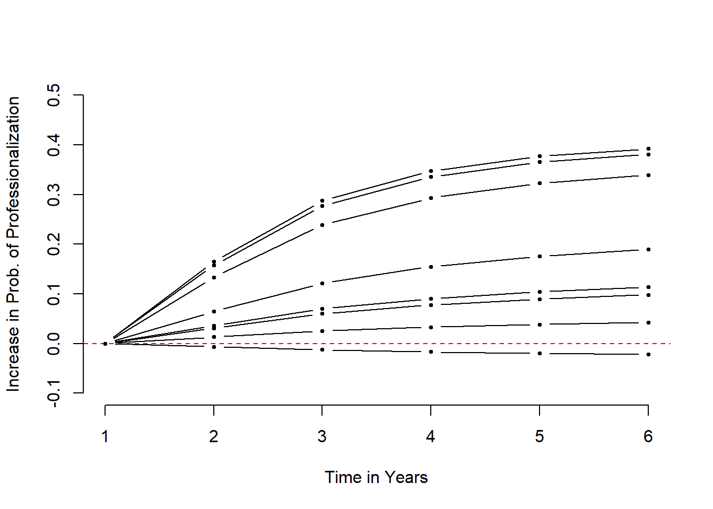
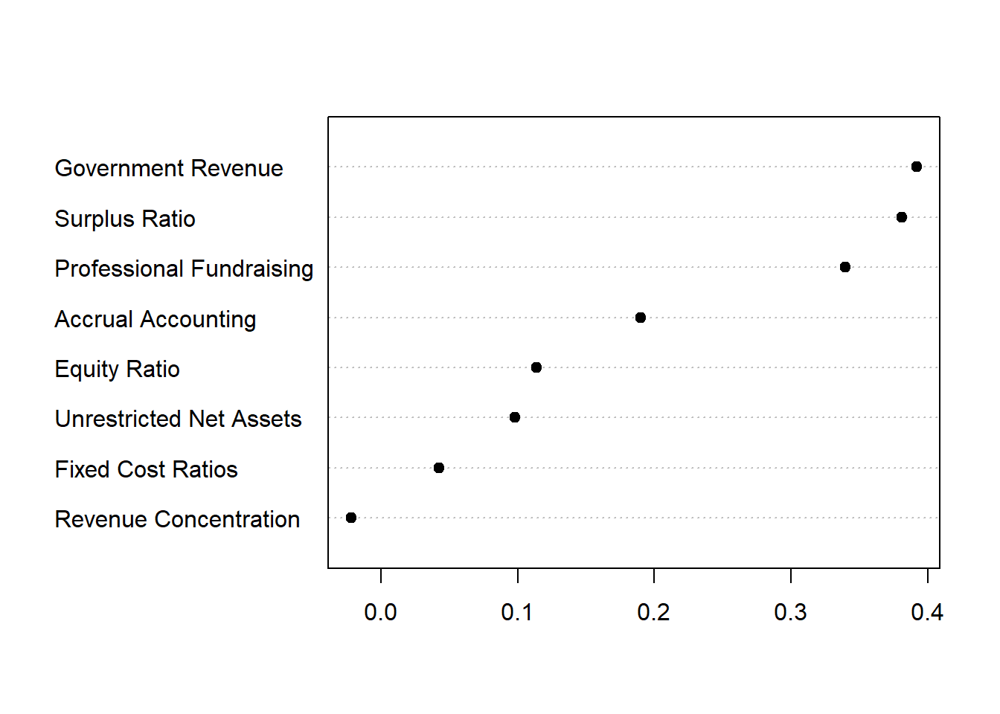

Here we define effect size as the increase or decrease in probability of professionalization when a specific covariate is present.
Typically we look at the median time to success/failure (professionalization) as the average effect, and then compare all effects to the average. In this case, we don’t have a long enough panel to calculate the median time to success, so we have a choice:
\[ h_j = \frac{1}{1 + e^{-(a_1D_1 + a_2D_2 + ... + a_jD_j + X\beta ) }} \]
The baseline hazard rate then for any particular time j is calculated as:
\[ h_j = \frac{1}{1 + e^{-(a_jD_j ) }} \]
And the effect size of a binary covariate at that period would be:
\[ h_j = \frac{1}{1 + e^{-(a_jD_j + \beta_1 \cdot ProfessionalFundraising) }} \]
Where you compare the case where ProfFundraising=1 to the case where ProfFundraising=0.
For continuous covariates, like HHI, you would compare the case where the covariate equals the mean, to a case where the covariate is at the mean plus a standard deviation, or conversely a case at the 25th percentile (low HHI) to 75th percentile (high HHI).
The effect in these cases will represent the change in probability of professionalization as a result of the covariate.
dat <- readRDS( "./Data/CompleteHazardSpells.rds" )
# copy original dataset
dat.original <- datm.all <- glm( formula= prof ~ D1 + D2 + D3 + D4 + D5 + D6 + Accrual + GovtMoneyRat + HHI +
UNAgrand + FixedCostRat + SurplusRat_ndrop_w892 + EqRat_w_K +
ProfFundFeeYes - 1,
data=dat, family=binomial("logit") )## Warning: glm.fit: fitted probabilities numerically 0 or 1 occurredm.all %>% tidy %>% kable( digits=3 )| term | estimate | std.error | statistic | p.value |
|---|---|---|---|---|
| D1 | -19.205 | 174.151 | -0.110 | 0.912 |
| D2 | -1.391 | 0.107 | -13.039 | 0.000 |
| D3 | -1.162 | 0.104 | -11.147 | 0.000 |
| D4 | -1.390 | 0.107 | -13.015 | 0.000 |
| D5 | -1.562 | 0.112 | -14.007 | 0.000 |
| D6 | -1.617 | 0.114 | -14.242 | 0.000 |
| Accrual | 0.611 | 0.054 | 11.254 | 0.000 |
| GovtMoneyRat | 1.269 | 0.096 | 13.169 | 0.000 |
| HHI | -0.526 | 0.111 | -4.751 | 0.000 |
| UNAgrand | 0.001 | 0.000 | 5.573 | 0.000 |
| FixedCostRat | 0.247 | 0.173 | 1.428 | 0.153 |
| SurplusRat_ndrop_w892 | 1.904 | 0.083 | 22.879 | 0.000 |
| EqRat_w_K | 0.001 | 0.000 | 5.071 | 0.000 |
| ProfFundFeeYes | 1.065 | 0.110 | 9.708 | 0.000 |
# df is data frame of specific subsector
# mod is the model that was run
createBaseline <- function( df, mod )
{
# only IVs in the model
td <- df[ , c("Accrual","GovtMoneyRat","HHI","UNAgrand","FixedCostRat",
"SurplusRat_ndrop_w892","EqRat_w_K","ProfFundFeeYes") ]
period1 <- c( c(1,0,0,0,0,0), unlist( lapply( td, quantile, 0.50, na.rm=T ) ) )
period2 <- c( c(0,1,0,0,0,0), unlist( lapply( td, quantile, 0.50, na.rm=T ) ) )
period3 <- c( c(0,0,1,0,0,0), unlist( lapply( td, quantile, 0.50, na.rm=T ) ) )
period4 <- c( c(0,0,0,1,0,0), unlist( lapply( td, quantile, 0.50, na.rm=T ) ) )
period5 <- c( c(0,0,0,0,1,0), unlist( lapply( td, quantile, 0.50, na.rm=T ) ) )
period6 <- c( c(0,0,0,0,0,1), unlist( lapply( td, quantile, 0.50, na.rm=T ) ) )
# period1[12] <- median( dat$SurplusRat_ndrop_w892, na.rm=T )
# period2[12] <- median( dat$SurplusRat_ndrop_w892, na.rm=T )
# period3[12] <- median( dat$SurplusRat_ndrop_w892, na.rm=T )
# period4[12] <- median( dat$SurplusRat_ndrop_w892, na.rm=T )
# period5[12] <- median( dat$SurplusRat_ndrop_w892, na.rm=T )
# period6[12] <- median( dat$SurplusRat_ndrop_w892, na.rm=T )
# period1 <- c(1,0,0,0,0,0, 0,0,0.54,0,0,-0.49853,1.9,0)
# period2 <- c(0,1,0,0,0,0, 0,0,0.54,0,0,-0.49853,1.9,0)
# period3 <- c(0,0,1,0,0,0, 0,0,0.54,0,0,-0.49853,1.9,0)
# period4 <- c(0,0,0,1,0,0, 0,0,0.54,0,0,-0.49853,1.9,0)
# period5 <- c(0,0,0,0,1,0, 0,0,0.54,0,0,-0.49853,1.9,0)
# period6 <- c(0,0,0,0,0,1, 0,0,0.54,0,0,-0.49853,1.9,0)
h1 <- ( 1 / ( 1 + exp(-( sum(period1 * mod$coefficients) )) ) )
h2 <- ( 1 / ( 1 + exp(-( sum(period2 * mod$coefficients) )) ) )
h3 <- ( 1 / ( 1 + exp(-( sum(period3 * mod$coefficients) )) ) )
h4 <- ( 1 / ( 1 + exp(-( sum(period4 * mod$coefficients) )) ) )
h5 <- ( 1 / ( 1 + exp(-( sum(period5 * mod$coefficients) )) ) )
h6 <- ( 1 / ( 1 + exp(-( sum(period6 * mod$coefficients) )) ) )
hrc <- data.frame( age=1:6, hazard.rate=round(c(h1,h2,h3,h4,h5,h6),4) )
src <- cumprod( (1-hrc$hazard.rate))
hrc <- cbind( hrc, survival.rate=src )
hrc
}hrc <- createBaseline( df=dat.original, mod=m.all )
# dput( hrc )
# hrt <- calc.effect( model=m.all, df=dat, variable.name="Accrual", quant=1 )
# hrc %>% pander
saveRDS( hrc, "./Data/BaselineVitalRates.rds" )
stargazer( hrc, summary=FALSE, type="html", out="./Results/BaseVitalRates.doc" )| age | hazard.rate | survival.rate | |
| 1 | 1 | 0 | 1 |
| 2 | 2 | 0.090 | 0.909 |
| 3 | 3 | 0.111 | 0.808 |
| 4 | 4 | 0.090 | 0.735 |
| 5 | 5 | 0.077 | 0.678 |
| 6 | 6 | 0.074 | 0.629 |
# prof ~ D1 + D2 + D3 + D4 + D5 + D6 + Accrual + GovtMoneyRat +
# HHI + UNAgrand + FixedCostRat + SurplusRat_ndrop_w892 + EqRat_w_K +
# ProfFundFeeYes - 1
# CALC EFFECTS AT 25th and 75th percentiles, or 0 to 1 for binary
# Accrual - 0 to 1
# GovMoneyRat - 0 to 0.5
# HHI 0.54 to 0.99
# UNAgrand 0 to 44.8
# FixedCostRat 0 to 0.06221
# SurplusRat_ndrop_w892 -0.49853 to 0.14060
# EqRat_w_K 1.9 to 24912
# ProfFundFeeYes 0 to 1
calc.effect <- function( model, df, variable.name, quant )
{
td <- df[ , c("Accrual","GovtMoneyRat","HHI","UNAgrand","FixedCostRat",
"SurplusRat_ndrop_w892","EqRat_w_K","ProfFundFeeYes") ]
period1 <- c( c(1,0,0,0,0,0), unlist( lapply( td, quantile, 0.50, na.rm=T ) ) )
period2 <- c( c(0,1,0,0,0,0), unlist( lapply( td, quantile, 0.50, na.rm=T ) ) )
period3 <- c( c(0,0,1,0,0,0), unlist( lapply( td, quantile, 0.50, na.rm=T ) ) )
period4 <- c( c(0,0,0,1,0,0), unlist( lapply( td, quantile, 0.50, na.rm=T ) ) )
period5 <- c( c(0,0,0,0,1,0), unlist( lapply( td, quantile, 0.50, na.rm=T ) ) )
period6 <- c( c(0,0,0,0,0,1), unlist( lapply( td, quantile, 0.50, na.rm=T ) ) )
coef.names <- c("D1","D2","D3","D4","D5","D6","Accrual","GovtMoneyRat",
"HHI","UNAgrand","FixedCostRat","SurplusRat_ndrop_w892",
"EqRat_w_K","ProfFundFeeYes" )
this.one <- which( coef.names == variable.name )
new.value <- quantile( df[,variable.name], quant, na.rm=T )
period1[ this.one ] <- new.value
period2[ this.one ] <- new.value
period3[ this.one ] <- new.value
period4[ this.one ] <- new.value
period5[ this.one ] <- new.value
period6[ this.one ] <- new.value
h1 <- ( 1 / ( 1 + exp(-( sum(period1 * model$coefficients) )) ) )
h2 <- ( 1 / ( 1 + exp(-( sum(period2 * model$coefficients) )) ) )
h3 <- ( 1 / ( 1 + exp(-( sum(period3 * model$coefficients) )) ) )
h4 <- ( 1 / ( 1 + exp(-( sum(period4 * model$coefficients) )) ) )
h5 <- ( 1 / ( 1 + exp(-( sum(period5 * model$coefficients) )) ) )
h6 <- ( 1 / ( 1 + exp(-( sum(period6 * model$coefficients) )) ) )
hrt <- data.frame( age=1:6, hazard.rate=round( c(h1,h2,h3,h4,h5,h6), 4) )
srt <- cumprod( (1-hrt$hazard.rate))
hrt <- cbind( hrt, survival.rate=srt )
hrt
}# "ACCRUAL"
hrt <- calc.effect( model=m.all, df=dat, variable.name="Accrual", quant=1 )
saveRDS( hrt, "./Data/AdjustedVitalRates.rds" )
# dput( hrt )# prof ~ D1 + D2 + D3 + D4 + D5 + D6 + Accrual + GovtMoneyRat +
# HHI + UNAgrand + FixedCostRat + SurplusRat_ndrop_w892 + EqRat_w_K +
# ProfFundFeeYes - 1
# CALC EFFECTS AT 25th and 75th percentiles, or 0 to 1 for binary
# Accrual - 0 to 1
# GovMoneyRat - 0 to 0.5
# HHI 0.54 to 0.99
# UNAgrand 0 to 44.8
# FixedCostRat 0 to 0.06221
# SurplusRat_ndrop_w892 -0.49853 to 0.14060
# EqRat_w_K 1.9 to 24912
# ProfFundFeeYes 0 to 1
# "BASELINE MODEL"
hrc %>% kable( caption="BASELINE MODEL" )| age | hazard.rate | survival.rate |
|---|---|---|
| 1 | 0.0000 | 1.0000000 |
| 2 | 0.0905 | 0.9095000 |
| 3 | 0.1112 | 0.8083636 |
| 4 | 0.0905 | 0.7352067 |
| 5 | 0.0773 | 0.6783752 |
| 6 | 0.0735 | 0.6285146 |
# "ACCRUAL"
quantile( dat$Accrual, c(0.05,0.25,0.5,0.75,0.95,0.99,1) )## 5% 25% 50% 75% 95% 99% 100%
## 0 0 0 0 1 1 1calc.effect( model=m.all, df=dat, variable.name="Accrual", quant=1 ) %>% kable( caption="ACCRUAL" )| age | hazard.rate | survival.rate |
|---|---|---|
| 1 | 0.0000 | 1.0000000 |
| 2 | 0.1549 | 0.8451000 |
| 3 | 0.1873 | 0.6868128 |
| 4 | 0.1550 | 0.5803568 |
| 5 | 0.1337 | 0.5027631 |
| 6 | 0.1275 | 0.4386608 |
# "GovtMoneyRat"
quantile( dat$GovtMoneyRat, c(0.05,0.25,0.5,0.75,0.95,0.99,1) )## 5% 25% 50% 75% 95% 99% 100%
## 0.0000000 0.0000000 0.0000000 0.0000000 0.3717799 0.9745395 1.0000000calc.effect( model=m.all, df=dat, variable.name="GovtMoneyRat", quant=0.99 ) %>% kable( caption="GovtMoneyRat" )| age | hazard.rate | survival.rate |
|---|---|---|
| 1 | 0.0000 | 1.0000000 |
| 2 | 0.2551 | 0.7449000 |
| 3 | 0.3010 | 0.5206851 |
| 4 | 0.2553 | 0.3877542 |
| 5 | 0.2239 | 0.3009360 |
| 6 | 0.2145 | 0.2363853 |
# "HHI"
quantile( dat$HHI, c(0.05,0.25,0.5,0.75,0.95,0.99,1) )## 5% 25% 50% 75% 95% 99% 100%
## 0.0000000 0.4948592 0.8477306 1.0000000 1.0000000 1.0000000 1.0000000calc.effect( model=m.all, df=dat, variable.name="HHI", quant=0.99 ) %>% kable( caption="HHI" )| age | hazard.rate | survival.rate |
|---|---|---|
| 1 | 0.0000 | 1.0000000 |
| 2 | 0.0841 | 0.9159000 |
| 3 | 0.1035 | 0.8211044 |
| 4 | 0.0842 | 0.7519674 |
| 5 | 0.0718 | 0.6979761 |
| 6 | 0.0682 | 0.6503741 |
# "UNAgrand"
quantile( dat$UNAgrand, c(0.05,0.25,0.5,0.75,0.95,0.99,1) )## 5% 25% 50% 75% 95% 99%
## 0.00000 0.00000 0.00000 0.00000 69.87122 368.26164
## 100%
## 21027.46519calc.effect( model=m.all, df=dat, variable.name="UNAgrand", quant=0.99 ) %>% kable( caption="UNAgrand" )| age | hazard.rate | survival.rate |
|---|---|---|
| 1 | 0.0000 | 1.0000000 |
| 2 | 0.1215 | 0.8785000 |
| 3 | 0.1481 | 0.7483942 |
| 4 | 0.1216 | 0.6573894 |
| 5 | 0.1043 | 0.5888237 |
| 6 | 0.0993 | 0.5303535 |
# "FixedCostRat"
quantile( dat$FixedCostRat, c(0.05,0.25,0.5,0.75,0.95,0.99,1) )## 5% 25% 50% 75% 95% 99% 100%
## 0.0000000 0.0000000 0.0000000 0.0000000 0.2457897 0.5985855 1.0000000calc.effect( model=m.all, df=dat, variable.name="FixedCostRat", quant=0.99 ) %>% kable( caption="FixedCostRat" )| age | hazard.rate | survival.rate |
|---|---|---|
| 1 | 0.0000 | 1.0000000 |
| 2 | 0.1034 | 0.8966000 |
| 3 | 0.1266 | 0.7830904 |
| 4 | 0.1035 | 0.7020406 |
| 5 | 0.0885 | 0.6399100 |
| 6 | 0.0842 | 0.5860296 |
# "SurplusRat_ndrop_w892"
quantile( dat$SurplusRat_ndrop_w892, c(0.05,0.25,0.5,0.75,0.95,0.99,1) )## 5% 25% 50% 75% 95% 99%
## -6.76835414 -6.76835414 -0.24975628 0.06591512 0.37984405 0.37984405
## 100%
## 0.37984405calc.effect( model=m.all, df=dat, variable.name="SurplusRat_ndrop_w892", quant=0.99 ) %>% kable( caption="SURPLUS RATIO" )| age | hazard.rate | survival.rate |
|---|---|---|
| 1 | 0.0000 | 1.0000000 |
| 2 | 0.2481 | 0.7519000 |
| 3 | 0.2932 | 0.5314429 |
| 4 | 0.2482 | 0.3995388 |
| 5 | 0.2174 | 0.3126791 |
| 6 | 0.2082 | 0.2475793 |
#"EqRat_w_K"
quantile( dat$EqRat_w_K, c(0.05,0.25,0.5,0.75,0.95,0.99,1) )## 5% 25% 50% 75% 95% 99%
## 0.000000e+00 3.027501e-03 4.173267e+00 2.817325e+01 1.236037e+02 3.554535e+02
## 100%
## 2.605173e+03calc.effect( model=m.all, df=dat, variable.name="EqRat_w_K", quant=0.99 ) %>% kable( caption="EQUITY RATIO" )| age | hazard.rate | survival.rate |
|---|---|---|
| 1 | 0.0000 | 1.0000000 |
| 2 | 0.1268 | 0.8732000 |
| 3 | 0.1544 | 0.7383779 |
| 4 | 0.1269 | 0.6446778 |
| 5 | 0.1090 | 0.5744079 |
| 6 | 0.1038 | 0.5147843 |
# "ProfFundFeeYes"
quantile( dat$ProfFundFeeYes, c(0.05,0.25,0.5,0.75,0.95,0.99,1) )## 5% 25% 50% 75% 95% 99% 100%
## 0 0 0 0 0 1 1calc.effect( model=m.all, df=dat, variable.name="ProfFundFeeYes", quant=1 ) %>% kable( caption="PROF FUNDRAISING?" )| age | hazard.rate | survival.rate |
|---|---|---|
| 1 | 0.0000 | 1.0000000 |
| 2 | 0.2240 | 0.7760000 |
| 3 | 0.2662 | 0.5694288 |
| 4 | 0.2241 | 0.4418198 |
| 5 | 0.1955 | 0.3554440 |
| 6 | 0.1870 | 0.2889760 |
# "BASELINE MODEL"
# hrc %>% kable( caption="BASELINE MODEL" )
# "ACCRUAL"
quantile( dat$Accrual, c(0.05,0.25,0.5,0.75,0.95,0.99,1) )## 5% 25% 50% 75% 95% 99% 100%
## 0 0 0 0 1 1 1effect.accrual <- hrc$survival.rate - calc.effect( model=m.all, df=dat, variable.name="Accrual", quant=1 )[,"survival.rate"]
# "GovMoneyRat"
quantile( dat$GovtMoneyRat, c(0.05,0.25,0.5,0.75,0.95,0.99,1) )## 5% 25% 50% 75% 95% 99% 100%
## 0.0000000 0.0000000 0.0000000 0.0000000 0.3717799 0.9745395 1.0000000effect.gov <- hrc$survival.rate - calc.effect( model=m.all, df=dat, variable.name="GovtMoneyRat", quant=0.99 )[,"survival.rate"]
# "HHI"
quantile( dat$HHI, c(0.05,0.25,0.5,0.75,0.95,0.99,1) )## 5% 25% 50% 75% 95% 99% 100%
## 0.0000000 0.4948592 0.8477306 1.0000000 1.0000000 1.0000000 1.0000000effect.hhi <- hrc$survival.rate - calc.effect( model=m.all, df=dat, variable.name="HHI", quant=0.99 )[,"survival.rate"]
# "UNAgrand"
quantile( dat$UNAgrand, c(0.05,0.25,0.5,0.75,0.95,0.99,1) )## 5% 25% 50% 75% 95% 99%
## 0.00000 0.00000 0.00000 0.00000 69.87122 368.26164
## 100%
## 21027.46519effect.una <- hrc$survival.rate - calc.effect( model=m.all, df=dat, variable.name="UNAgrand", quant=0.99 )[,"survival.rate"]
# "FixedCostRat"
quantile( dat$FixedCostRat, c(0.05,0.25,0.5,0.75,0.95,0.99,1) )## 5% 25% 50% 75% 95% 99% 100%
## 0.0000000 0.0000000 0.0000000 0.0000000 0.2457897 0.5985855 1.0000000effect.fcr <- hrc$survival.rate - calc.effect( model=m.all, df=dat, variable.name="FixedCostRat", quant=0.99 )[,"survival.rate"]
# "SurplusRat_ndrop_w892"
quantile( dat$SurplusRat_ndrop_w892, c(0.05,0.25,0.5,0.75,0.95,0.99,1) )## 5% 25% 50% 75% 95% 99%
## -6.76835414 -6.76835414 -0.24975628 0.06591512 0.37984405 0.37984405
## 100%
## 0.37984405effect.surp <- hrc$survival.rate - calc.effect( model=m.all, df=dat, variable.name="SurplusRat_ndrop_w892", quant=0.99 )[,"survival.rate"]
#"EqRat_w_K"
quantile( dat$EqRat_w_K, c(0.05,0.25,0.5,0.75,0.95,0.99,1) )## 5% 25% 50% 75% 95% 99%
## 0.000000e+00 3.027501e-03 4.173267e+00 2.817325e+01 1.236037e+02 3.554535e+02
## 100%
## 2.605173e+03effect.eqrat <- hrc$survival.rate - calc.effect( model=m.all, df=dat, variable.name="EqRat_w_K", quant=0.99 )[,"survival.rate"]
# "ProfFundFeeYes"
quantile( dat$ProfFundFeeYes, c(0.05,0.25,0.5,0.75,0.95,0.99,1) )## 5% 25% 50% 75% 95% 99% 100%
## 0 0 0 0 0 1 1effect.fundfee <- hrc$survival.rate - calc.effect( model=m.all, df=dat, variable.name="ProfFundFeeYes", quant=1 )[,"survival.rate"]
plot( 1:6, rep(0,6), type="n", ylim=c(-0.1,0.5), bty="n",
ylab="Increase in Prob. of Professionalization", xlab="Time in Years")
abline( h=0, lty=2, col="red" )
points( 1:6, effect.accrual, type="b", pch=19, cex=0.5 )
points( 1:6, effect.gov, type="b", pch=19, cex=0.5 )
points( 1:6, effect.hhi, type="b", pch=19, cex=0.5 )
points( 1:6, effect.una, type="b", pch=19, cex=0.5 )
points( 1:6, effect.fcr, type="b", pch=19, cex=0.5 )
points( 1:6, effect.surp, type="b", pch=19, cex=0.5 )
points( 1:6, effect.eqrat, type="b", pch=19, cex=0.5 )
points( 1:6, effect.fundfee, type="b", pch=19, cex=0.5 )
Effect.Size <- data.frame(
prob.increase=c( effect.accrual[6], effect.gov[6], effect.hhi[6], effect.una[6],
effect.fcr[6], effect.surp[6], effect.eqrat[6], effect.fundfee[6] ),
var.name=c("Accrual Accounting","Government Revenue","Revenue Concentration",
"Unrestricted Net Assets","Fixed Cost Ratios","Surplus Ratio",
"Equity Ratio","Professional Fundraising")
)
Effect.Size this.order <- order( Effect.Size$prob.increase ) # set one order for all graphs
ES.all <- Effect.Size[ this.order , ]
Effect.Size <- arrange( Effect.Size, prob.increase )
dotchart( Effect.Size$prob.increase, labels=Effect.Size$var.name, pch=19, bty="n" )
dat <- dat.original[ dat.original$Subsector2 == "Arts" , ]
# > unique( as.character(dat$Subsector2) )
# [1] "Edu(Exclu Higher)" "Human Svcs"
# [3] "Other"
# [5] "Public" "Health"
# [7] "Higher Edu or Hospitals"
m.arts <- glm( formula= prof ~ D1 + D2 + D3 + D4 + D5 + D6 + Accrual + GovtMoneyRat + HHI +
UNAgrand + FixedCostRat + SurplusRat_ndrop_w892 + EqRat_w_K +
ProfFundFeeYes - 1,
data=dat, family=binomial("logit") )## Warning: glm.fit: fitted probabilities numerically 0 or 1 occurredm.arts %>% tidy %>% kable( digits=3 )| term | estimate | std.error | statistic | p.value |
|---|---|---|---|---|
| D1 | -19.164 | 513.524 | -0.037 | 0.970 |
| D2 | -1.792 | 0.329 | -5.449 | 0.000 |
| D3 | -1.369 | 0.326 | -4.198 | 0.000 |
| D4 | -1.653 | 0.322 | -5.140 | 0.000 |
| D5 | -1.763 | 0.331 | -5.328 | 0.000 |
| D6 | -1.637 | 0.334 | -4.897 | 0.000 |
| Accrual | 0.782 | 0.167 | 4.686 | 0.000 |
| GovtMoneyRat | 1.264 | 0.452 | 2.799 | 0.005 |
| HHI | -0.513 | 0.344 | -1.488 | 0.137 |
| UNAgrand | 0.002 | 0.001 | 2.137 | 0.033 |
| FixedCostRat | 0.238 | 0.650 | 0.366 | 0.714 |
| SurplusRat_ndrop_w892 | 2.525 | 0.282 | 8.946 | 0.000 |
| EqRat_w_K | 0.001 | 0.001 | 2.009 | 0.045 |
| ProfFundFeeYes | 1.317 | 0.325 | 4.057 | 0.000 |
# "BASELINE MODEL"
hrc <- createBaseline( df=dat, mod=m.arts )
hrc %>% pander| age | hazard.rate | survival.rate |
|---|---|---|
| 1 | 0 | 1 |
| 2 | 0.0449 | 0.9551 |
| 3 | 0.0669 | 0.8912 |
| 4 | 0.0513 | 0.8455 |
| 5 | 0.0462 | 0.8064 |
| 6 | 0.052 | 0.7645 |
# "ACCRUAL"
quantile( dat$Accrual, c(0.05,0.25,0.5,0.75,0.95,0.99,1) )## 5% 25% 50% 75% 95% 99% 100%
## 0 0 0 0 1 1 1effect.accrual <- hrc$survival.rate - calc.effect( model=m.all, df=dat, variable.name="Accrual", quant=1 )[,"survival.rate"]
# "GovMoneyRat"
quantile( dat$GovtMoneyRat, c(0.05,0.25,0.5,0.75,0.95,0.99,1) )## 5% 25% 50% 75% 95% 99% 100%
## 0.0000000 0.0000000 0.0000000 0.0000000 0.1935580 0.6928047 0.9971454effect.gov <- hrc$survival.rate - calc.effect( model=m.all, df=dat, variable.name="GovtMoneyRat", quant=0.99 )[,"survival.rate"]
# "HHI"
quantile( dat$HHI, c(0.05,0.25,0.5,0.75,0.95,0.99,1) )## 5% 25% 50% 75% 95% 99% 100%
## 0.0000000 0.5165398 0.8242843 1.0000000 1.0000000 1.0000000 1.0000000effect.hhi <- hrc$survival.rate - calc.effect( model=m.all, df=dat, variable.name="HHI", quant=0.99 )[,"survival.rate"]
# "UNAgrand"
quantile( dat$UNAgrand, c(0.05,0.25,0.5,0.75,0.95,0.99,1) )## 5% 25% 50% 75% 95% 99%
## 0.00000 0.00000 0.00000 0.00000 38.44338 199.59969
## 100%
## 21027.46519effect.una <- hrc$survival.rate - calc.effect( model=m.all, df=dat, variable.name="UNAgrand", quant=0.99 )[,"survival.rate"]
# "FixedCostRat"
quantile( dat$FixedCostRat, c(0.05,0.25,0.5,0.75,0.95,0.99,1) )## 5% 25% 50% 75% 95% 99% 100%
## 0.0000000 0.0000000 0.0000000 0.0000000 0.1770490 0.4487392 0.9502275effect.fcr <- hrc$survival.rate - calc.effect( model=m.all, df=dat, variable.name="FixedCostRat", quant=0.99 )[,"survival.rate"]
# "SurplusRat_ndrop_w892"
quantile( dat$SurplusRat_ndrop_w892, c(0.05,0.25,0.5,0.75,0.95,0.99,1) )## 5% 25% 50% 75% 95% 99%
## -6.76835414 -2.75323703 -0.33474360 0.04912849 0.37984405 0.37984405
## 100%
## 0.37984405effect.surp <- hrc$survival.rate - calc.effect( model=m.all, df=dat, variable.name="SurplusRat_ndrop_w892", quant=0.99 )[,"survival.rate"]
#"EqRat_w_K"
quantile( dat$EqRat_w_K, c(0.05,0.25,0.5,0.75,0.95,0.99,1) )## 5% 25% 50% 75% 95% 99%
## 0.000000e+00 3.043615e-03 2.184161e+00 2.234425e+01 1.048598e+02 3.245534e+02
## 100%
## 2.605173e+03effect.eqrat <- hrc$survival.rate - calc.effect( model=m.all, df=dat, variable.name="EqRat_w_K", quant=0.99 )[,"survival.rate"]
# "ProfFundFeeYes"
quantile( dat$ProfFundFeeYes, c(0.05,0.25,0.5,0.75,0.95,0.99,1) )## 5% 25% 50% 75% 95% 99% 100%
## 0 0 0 0 0 1 1effect.fundfee <- hrc$survival.rate - calc.effect( model=m.all, df=dat, variable.name="ProfFundFeeYes", quant=1 )[,"survival.rate"]
Effect.Size <- data.frame(
prob.increase=c( effect.accrual[6], effect.gov[6], effect.hhi[6], effect.una[6],
effect.fcr[6], effect.surp[6], effect.eqrat[6], effect.fundfee[6] ),
var.name=c("Accrual Accounting","Government Revenue","Revenue Concentration",
"Unrestricted Net Assets","Fixed Cost Ratios","Surplus Ratio",
"Equity Ratio","Professional Fundraising")
)
Effect.Size ES.arts <- Effect.Size[ this.order , ]
Effect.Size <- arrange( Effect.Size, prob.increase )
#dotchart( Effect.Size$prob.increase, labels=Effect.Size$var.name, pch=19, bty="n" )
# p <- plot_ly( Effect.Size , x=prob.increase, y=var.name, mode = "markers", marker=list(color="gray", size=20) )
#
# layout(
# title = "Effect Size of Each Study Variable",
# xaxis = list(title = "Increase in Probability of Professionalization"),
# yaxis = list(title = ""),
# margin = list(l = 200)
# )
# pdat <- dat.original[ dat.original$Subsector2 == "Health" , ]
# > unique( as.character(dat$Subsector2) )
# [1] "Edu(Exclu Higher)" "Human Svcs"
# [3] "Other"
# [5] "Public"
# [7] "Higher Edu or Hospitals"
m.health <- glm( formula= prof ~ D1 + D2 + D3 + D4 + D5 + D6 + Accrual + GovtMoneyRat + HHI +
UNAgrand + FixedCostRat + SurplusRat_ndrop_w892 + EqRat_w_K +
ProfFundFeeYes - 1,
data=dat, family=binomial("logit") )
m.health %>% tidy %>% kable( digits=3 )| term | estimate | std.error | statistic | p.value |
|---|---|---|---|---|
| D1 | -19.696 | 615.076 | -0.032 | 0.974 |
| D2 | -2.055 | 0.449 | -4.575 | 0.000 |
| D3 | -1.606 | 0.423 | -3.798 | 0.000 |
| D4 | -1.731 | 0.433 | -4.003 | 0.000 |
| D5 | -2.277 | 0.464 | -4.906 | 0.000 |
| D6 | -2.263 | 0.480 | -4.715 | 0.000 |
| Accrual | 0.814 | 0.189 | 4.296 | 0.000 |
| GovtMoneyRat | 0.927 | 0.339 | 2.731 | 0.006 |
| HHI | 0.425 | 0.433 | 0.983 | 0.326 |
| UNAgrand | 0.002 | 0.001 | 1.869 | 0.062 |
| FixedCostRat | -0.466 | 0.668 | -0.698 | 0.485 |
| SurplusRat_ndrop_w892 | 1.406 | 0.257 | 5.474 | 0.000 |
| EqRat_w_K | 0.000 | 0.001 | -0.483 | 0.629 |
| ProfFundFeeYes | 1.093 | 0.357 | 3.063 | 0.002 |
# "BASELINE MODEL"
hrc <- createBaseline( df=dat, mod=m.health )
hrc %>% pander| age | hazard.rate | survival.rate |
|---|---|---|
| 1 | 0 | 1 |
| 2 | 0.1205 | 0.8795 |
| 3 | 0.1767 | 0.7241 |
| 4 | 0.1592 | 0.6088 |
| 5 | 0.0989 | 0.5486 |
| 6 | 0.1001 | 0.4937 |
# "ACCRUAL"
quantile( dat$Accrual, c(0.05,0.25,0.5,0.75,0.95,0.99,1) )## 5% 25% 50% 75% 95% 99% 100%
## 0 0 0 1 1 1 1effect.accrual <- hrc$survival.rate - calc.effect( model=m.all, df=dat, variable.name="Accrual", quant=1 )[,"survival.rate"]
# "GovMoneyRat"
quantile( dat$GovtMoneyRat, c(0.05,0.25,0.5,0.75,0.95,0.99,1) )## 5% 25% 50% 75% 95% 99% 100%
## 0.0000000 0.0000000 0.0000000 0.0000000 0.5504651 0.9811782 1.0000000effect.gov <- hrc$survival.rate - calc.effect( model=m.all, df=dat, variable.name="GovtMoneyRat", quant=0.99 )[,"survival.rate"]
# "HHI"
quantile( dat$HHI, c(0.05,0.25,0.5,0.75,0.95,0.99,1) )## 5% 25% 50% 75% 95% 99% 100%
## 0.0000000 0.4492662 0.8857420 1.0000000 1.0000000 1.0000000 1.0000000effect.hhi <- hrc$survival.rate - calc.effect( model=m.all, df=dat, variable.name="HHI", quant=0.99 )[,"survival.rate"]
# "UNAgrand"
quantile( dat$UNAgrand, c(0.05,0.25,0.5,0.75,0.95,0.99,1) )## 5% 25% 50% 75% 95% 99% 100%
## 0.0000 0.0000 0.0000 0.0000 106.7672 403.1860 4421.8504effect.una <- hrc$survival.rate - calc.effect( model=m.all, df=dat, variable.name="UNAgrand", quant=0.99 )[,"survival.rate"]
# "FixedCostRat"
quantile( dat$FixedCostRat, c(0.05,0.25,0.5,0.75,0.95,0.99,1) )## 5% 25% 50% 75% 95% 99% 100%
## 0.00000000 0.00000000 0.00000000 0.01216864 0.29588147 0.61660849 1.00000000effect.fcr <- hrc$survival.rate - calc.effect( model=m.all, df=dat, variable.name="FixedCostRat", quant=0.99 )[,"survival.rate"]
# "SurplusRat_ndrop_w892"
quantile( dat$SurplusRat_ndrop_w892, c(0.05,0.25,0.5,0.75,0.95,0.99,1) )## 5% 25% 50% 75% 95% 99%
## -6.76835414 -6.76835414 -0.21961223 0.08052241 0.37984405 0.37984405
## 100%
## 0.37984405effect.surp <- hrc$survival.rate - calc.effect( model=m.all, df=dat, variable.name="SurplusRat_ndrop_w892", quant=0.99 )[,"survival.rate"]
#"EqRat_w_K"
quantile( dat$EqRat_w_K, c(0.05,0.25,0.5,0.75,0.95,0.99,1) )## 5% 25% 50% 75% 95% 99%
## 0.000000e+00 2.221922e-03 4.731050e-01 3.114725e+01 1.209503e+02 2.801794e+02
## 100%
## 2.016466e+03effect.eqrat <- hrc$survival.rate - calc.effect( model=m.all, df=dat, variable.name="EqRat_w_K", quant=0.99 )[,"survival.rate"]
# "ProfFundFeeYes"
quantile( dat$ProfFundFeeYes, c(0.05,0.25,0.5,0.75,0.95,0.99,1) )## 5% 25% 50% 75% 95% 99% 100%
## 0 0 0 0 0 1 1effect.fundfee <- hrc$survival.rate - calc.effect( model=m.all, df=dat, variable.name="ProfFundFeeYes", quant=1 )[,"survival.rate"]
Effect.Size <- data.frame(
prob.increase=c( effect.accrual[6], effect.gov[6], effect.hhi[6], effect.una[6],
effect.fcr[6], effect.surp[6], effect.eqrat[6], effect.fundfee[6] ),
var.name=c("Accrual Accounting","Government Revenue","Revenue Concentration",
"Unrestricted Net Assets","Fixed Cost Ratios","Surplus Ratio",
"Equity Ratio","Professional Fundraising")
)
Effect.Size ES.health <- Effect.Size[ this.order , ]
Effect.Size <- arrange( Effect.Size, prob.increase )
#dotchart( Effect.Size$prob.increase, labels=Effect.Size$var.name, pch=19, bty="n" )
# p <- plot_ly( Effect.Size , x=prob.increase, y=var.name, mode = "markers", marker=list(color="gray", size=20) )
#
# layout(
# title = "Effect Size of Each Study Variable",
# xaxis = list(title = "Increase in Probability of Professionalization"),
# yaxis = list(title = ""),
# margin = list(l = 200)
# )
# pdat <- dat.original[ dat.original$Subsector2 == "Human Svcs" , ]
# > unique( as.character(dat$Subsector2) )
# [1] "Edu(Exclu Higher)"
# [3] "Other"
# [5] "Public"
# [7] "Higher Edu or Hospitals"
m.hs <- glm( formula= prof ~ D1 + D2 + D3 + D4 + D5 + D6 + Accrual + GovtMoneyRat + HHI +
UNAgrand + FixedCostRat + SurplusRat_ndrop_w892 + EqRat_w_K +
ProfFundFeeYes - 1,
data=dat, family=binomial("logit") )## Warning: glm.fit: fitted probabilities numerically 0 or 1 occurredm.hs %>% tidy %>% kable( digits=3 )| term | estimate | std.error | statistic | p.value |
|---|---|---|---|---|
| D1 | -17.984 | 176.697 | -0.102 | 0.919 |
| D2 | -1.264 | 0.166 | -7.610 | 0.000 |
| D3 | -1.085 | 0.162 | -6.677 | 0.000 |
| D4 | -1.231 | 0.168 | -7.334 | 0.000 |
| D5 | -1.452 | 0.176 | -8.275 | 0.000 |
| D6 | -1.540 | 0.180 | -8.573 | 0.000 |
| Accrual | 0.540 | 0.088 | 6.133 | 0.000 |
| GovtMoneyRat | 1.074 | 0.134 | 7.986 | 0.000 |
| HHI | -0.627 | 0.175 | -3.575 | 0.000 |
| UNAgrand | 0.000 | 0.000 | 2.115 | 0.034 |
| FixedCostRat | 0.484 | 0.239 | 2.028 | 0.043 |
| SurplusRat_ndrop_w892 | 1.963 | 0.138 | 14.212 | 0.000 |
| EqRat_w_K | 0.001 | 0.000 | 3.269 | 0.001 |
| ProfFundFeeYes | 0.954 | 0.170 | 5.608 | 0.000 |
# "BASELINE MODEL"
hrc <- createBaseline( df=dat, mod=m.hs )
hrc %>% pander| age | hazard.rate | survival.rate |
|---|---|---|
| 1 | 0 | 1 |
| 2 | 0.0993 | 0.9007 |
| 3 | 0.1166 | 0.7957 |
| 4 | 0.1023 | 0.7143 |
| 5 | 0.0837 | 0.6545 |
| 6 | 0.0772 | 0.604 |
# "ACCRUAL"
quantile( dat$Accrual, c(0.05,0.25,0.5,0.75,0.95,0.99,1) )## 5% 25% 50% 75% 95% 99% 100%
## 0 0 0 0 1 1 1effect.accrual <- hrc$survival.rate - calc.effect( model=m.all, df=dat, variable.name="Accrual", quant=1 )[,"survival.rate"]
# "GovMoneyRat"
quantile( dat$GovtMoneyRat, c(0.05,0.25,0.5,0.75,0.95,0.99,1) )## 5% 25% 50% 75% 95% 99% 100%
## 0.0000000 0.0000000 0.0000000 0.0000000 0.6239157 0.9993190 1.0000000effect.gov <- hrc$survival.rate - calc.effect( model=m.all, df=dat, variable.name="GovtMoneyRat", quant=0.99 )[,"survival.rate"]
# "HHI"
quantile( dat$HHI, c(0.05,0.25,0.5,0.75,0.95,0.99,1) )## 5% 25% 50% 75% 95% 99% 100%
## 0.0000000 0.5000840 0.8276155 1.0000000 1.0000000 1.0000000 1.0000000effect.hhi <- hrc$survival.rate - calc.effect( model=m.all, df=dat, variable.name="HHI", quant=0.99 )[,"survival.rate"]
# "UNAgrand"
quantile( dat$UNAgrand, c(0.05,0.25,0.5,0.75,0.95,0.99,1) )## 5% 25% 50% 75% 95% 99% 100%
## 0.00000 0.00000 0.00000 0.00000 83.77296 545.86242 3634.70613effect.una <- hrc$survival.rate - calc.effect( model=m.all, df=dat, variable.name="UNAgrand", quant=0.99 )[,"survival.rate"]
# "FixedCostRat"
quantile( dat$FixedCostRat, c(0.05,0.25,0.5,0.75,0.95,0.99,1) )## 5% 25% 50% 75% 95% 99% 100%
## 0.00000000 0.00000000 0.00000000 0.00632747 0.38377184 0.71153805 1.00000000effect.fcr <- hrc$survival.rate - calc.effect( model=m.all, df=dat, variable.name="FixedCostRat", quant=0.99 )[,"survival.rate"]
# "SurplusRat_ndrop_w892"
quantile( dat$SurplusRat_ndrop_w892, c(0.05,0.25,0.5,0.75,0.95,0.99,1) )## 5% 25% 50% 75% 95% 99%
## -6.76835414 -6.76835414 -0.21592957 0.06359529 0.37984405 0.37984405
## 100%
## 0.37984405effect.surp <- hrc$survival.rate - calc.effect( model=m.all, df=dat, variable.name="SurplusRat_ndrop_w892", quant=0.99 )[,"survival.rate"]
#"EqRat_w_K"
quantile( dat$EqRat_w_K, c(0.05,0.25,0.5,0.75,0.95,0.99,1) )## 5% 25% 50% 75% 95% 99%
## 0.000000e+00 1.983112e-03 1.709500e+00 2.558325e+01 1.078252e+02 3.063640e+02
## 100%
## 2.047608e+03effect.eqrat <- hrc$survival.rate - calc.effect( model=m.all, df=dat, variable.name="EqRat_w_K", quant=0.99 )[,"survival.rate"]
# "ProfFundFeeYes"
quantile( dat$ProfFundFeeYes, c(0.05,0.25,0.5,0.75,0.95,0.99,1) )## 5% 25% 50% 75% 95% 99% 100%
## 0 0 0 0 0 1 1effect.fundfee <- hrc$survival.rate - calc.effect( model=m.all, df=dat, variable.name="ProfFundFeeYes", quant=1 )[,"survival.rate"]
Effect.Size <- data.frame(
prob.increase=c( effect.accrual[6], effect.gov[6], effect.hhi[6], effect.una[6],
effect.fcr[6], effect.surp[6], effect.eqrat[6], effect.fundfee[6] ),
var.name=c("Accrual Accounting","Government Revenue","Revenue Concentration",
"Unrestricted Net Assets","Fixed Cost Ratios","Surplus Ratio",
"Equity Ratio","Professional Fundraising")
)
Effect.Size ES.hs <- Effect.Size[ this.order , ]
Effect.Size <- arrange( Effect.Size, prob.increase )
#dotchart( Effect.Size$prob.increase, labels=Effect.Size$var.name, pch=19, bty="n" )
p <- plot_ly( Effect.Size , x=~prob.increase, y=~var.name, type="scatter",
mode="marker", marker=list(color="gray", size=20) ) %>%
layout(
title = "Effect Size of Each Study Variable",
xaxis = list(title = "Increase in Probability of Professionalization"),
yaxis = list(title = ""),
margin = list(l = 200)
)
p## A marker object has been specified, but markers is not in the mode
## Adding markers to the mode...dat <- dat.original[ dat.original$Subsector2 == "Public" , ]
# > unique( as.character(dat$Subsector2) )
# [1] "Edu(Exclu Higher)"
# [3] "Other"
# [5]
# [7] "Higher Edu or Hospitals"
m.pub <- glm( formula= prof ~ D1 + D2 + D3 + D4 + D5 + D6 + Accrual + GovtMoneyRat + HHI +
UNAgrand + FixedCostRat + SurplusRat_ndrop_w892 + EqRat_w_K +
ProfFundFeeYes - 1,
data=dat, family=binomial("logit") )## Warning: glm.fit: fitted probabilities numerically 0 or 1 occurredm.pub %>% tidy %>% kable( digits=3 )| term | estimate | std.error | statistic | p.value |
|---|---|---|---|---|
| D1 | -25.377 | 451.839 | -0.056 | 0.955 |
| D2 | -1.310 | 0.329 | -3.985 | 0.000 |
| D3 | -1.119 | 0.320 | -3.497 | 0.000 |
| D4 | -1.411 | 0.321 | -4.393 | 0.000 |
| D5 | -1.251 | 0.328 | -3.818 | 0.000 |
| D6 | -1.732 | 0.346 | -4.999 | 0.000 |
| Accrual | 0.458 | 0.152 | 3.007 | 0.003 |
| GovtMoneyRat | 1.867 | 0.255 | 7.330 | 0.000 |
| HHI | -0.719 | 0.338 | -2.129 | 0.033 |
| UNAgrand | 0.002 | 0.000 | 4.684 | 0.000 |
| FixedCostRat | -0.556 | 0.649 | -0.857 | 0.392 |
| SurplusRat_ndrop_w892 | 1.623 | 0.210 | 7.734 | 0.000 |
| EqRat_w_K | 0.002 | 0.000 | 3.829 | 0.000 |
| ProfFundFeeYes | 1.356 | 0.358 | 3.790 | 0.000 |
# "BASELINE MODEL"
hrc <- createBaseline( df=dat, mod=m.pub )
hrc %>% pander| age | hazard.rate | survival.rate |
|---|---|---|
| 1 | 0 | 1 |
| 2 | 0.0918 | 0.9082 |
| 3 | 0.1089 | 0.8093 |
| 4 | 0.0837 | 0.7416 |
| 5 | 0.0968 | 0.6698 |
| 6 | 0.0621 | 0.6282 |
# "ACCRUAL"
quantile( dat$Accrual, c(0.05,0.25,0.5,0.75,0.95,0.99,1) )## 5% 25% 50% 75% 95% 99% 100%
## 0 0 0 0 1 1 1effect.accrual <- hrc$survival.rate - calc.effect( model=m.all, df=dat, variable.name="Accrual", quant=1 )[,"survival.rate"]
# "GovMoneyRat"
quantile( dat$GovtMoneyRat, c(0.05,0.25,0.5,0.75,0.95,0.99,1) )## 5% 25% 50% 75% 95% 99% 100%
## 0.0000000 0.0000000 0.0000000 0.0000000 0.4084217 0.9929609 1.0000000effect.gov <- hrc$survival.rate - calc.effect( model=m.all, df=dat, variable.name="GovtMoneyRat", quant=0.99 )[,"survival.rate"]
# "HHI"
quantile( dat$HHI, c(0.05,0.25,0.5,0.75,0.95,0.99,1) )## 5% 25% 50% 75% 95% 99% 100%
## 0.0000000 0.5010546 0.9071981 1.0000000 1.0000000 1.0000000 1.0000000effect.hhi <- hrc$survival.rate - calc.effect( model=m.all, df=dat, variable.name="HHI", quant=0.99 )[,"survival.rate"]
# "UNAgrand"
quantile( dat$UNAgrand, c(0.05,0.25,0.5,0.75,0.95,0.99,1) )## 5% 25% 50% 75% 95% 99% 100%
## 0.0000 0.0000 0.0000 0.0000 109.9030 682.0491 5274.3083effect.una <- hrc$survival.rate - calc.effect( model=m.all, df=dat, variable.name="UNAgrand", quant=0.99 )[,"survival.rate"]
# "FixedCostRat"
quantile( dat$FixedCostRat, c(0.05,0.25,0.5,0.75,0.95,0.99,1) )## 5% 25% 50% 75% 95% 99% 100%
## 0.0000000 0.0000000 0.0000000 0.0000000 0.1381706 0.5085401 0.9957295effect.fcr <- hrc$survival.rate - calc.effect( model=m.all, df=dat, variable.name="FixedCostRat", quant=0.99 )[,"survival.rate"]
# "SurplusRat_ndrop_w892"
quantile( dat$SurplusRat_ndrop_w892, c(0.05,0.25,0.5,0.75,0.95,0.99,1) )## 5% 25% 50% 75% 95% 99% 100%
## -6.7683541 -6.7683541 -0.2123354 0.1073716 0.3798441 0.3798441 0.3798441effect.surp <- hrc$survival.rate - calc.effect( model=m.all, df=dat, variable.name="SurplusRat_ndrop_w892", quant=0.99 )[,"survival.rate"]
#"EqRat_w_K"
quantile( dat$EqRat_w_K, c(0.05,0.25,0.5,0.75,0.95,0.99,1) )## 5% 25% 50% 75% 95% 99%
## 0.000000e+00 6.873126e-03 7.787000e+00 3.976400e+01 1.928766e+02 5.796200e+02
## 100%
## 2.605173e+03effect.eqrat <- hrc$survival.rate - calc.effect( model=m.all, df=dat, variable.name="EqRat_w_K", quant=0.99 )[,"survival.rate"]
# "ProfFundFeeYes"
quantile( dat$ProfFundFeeYes, c(0.05,0.25,0.5,0.75,0.95,0.99,1) )## 5% 25% 50% 75% 95% 99% 100%
## 0 0 0 0 0 1 1effect.fundfee <- hrc$survival.rate - calc.effect( model=m.all, df=dat, variable.name="ProfFundFeeYes", quant=1 )[,"survival.rate"]
Effect.Size <- data.frame(
prob.increase=c( effect.accrual[6], effect.gov[6], effect.hhi[6], effect.una[6],
effect.fcr[6], effect.surp[6], effect.eqrat[6], effect.fundfee[6] ),
var.name=c("Accrual Accounting","Government Revenue","Revenue Concentration",
"Unrestricted Net Assets","Fixed Cost Ratios","Surplus Ratio",
"Equity Ratio","Professional Fundraising")
)
Effect.Size ES.pub <- Effect.Size[ this.order , ]
Effect.Size <- arrange( Effect.Size, prob.increase )
#dotchart( Effect.Size$prob.increase, labels=Effect.Size$var.name, pch=19, bty="n" )
# p <- plot_ly( Effect.Size , x=prob.increase, y=var.name, mode = "markers", marker=list(color="gray", size=20) )
#
# layout(
# title = "Effect Size of Each Study Variable",
# xaxis = list(title = "Increase in Probability of Professionalization"),
# yaxis = list(title = ""),
# margin = list(l = 200)
# )
# pdat <- dat.original[ dat.original$Subsector2 == "Edu(Exclu Higher)" , ]
# > unique( as.character(dat$Subsector2) )
# [1]
# [3] "Other"
# [5]
# [7] "Higher Edu or Hospitals"
m.edu <- glm( formula= prof ~ D1 + D2 + D3 + D4 + D5 + D6 + Accrual + GovtMoneyRat + HHI +
UNAgrand + FixedCostRat + SurplusRat_ndrop_w892 + EqRat_w_K +
ProfFundFeeYes - 1,
data=dat, family=binomial("logit") )## Warning: glm.fit: fitted probabilities numerically 0 or 1 occurredm.edu %>% tidy %>% kable( digits=3 )| term | estimate | std.error | statistic | p.value |
|---|---|---|---|---|
| D1 | -18.797 | 424.059 | -0.044 | 0.965 |
| D2 | -1.087 | 0.281 | -3.875 | 0.000 |
| D3 | -0.827 | 0.277 | -2.986 | 0.003 |
| D4 | -1.121 | 0.284 | -3.950 | 0.000 |
| D5 | -1.370 | 0.303 | -4.524 | 0.000 |
| D6 | -1.219 | 0.298 | -4.097 | 0.000 |
| Accrual | 0.814 | 0.140 | 5.802 | 0.000 |
| GovtMoneyRat | 1.692 | 0.344 | 4.916 | 0.000 |
| HHI | -1.261 | 0.297 | -4.248 | 0.000 |
| UNAgrand | 0.001 | 0.001 | 1.920 | 0.055 |
| FixedCostRat | 1.456 | 0.614 | 2.372 | 0.018 |
| SurplusRat_ndrop_w892 | 1.931 | 0.227 | 8.507 | 0.000 |
| EqRat_w_K | 0.001 | 0.001 | 0.882 | 0.378 |
| ProfFundFeeYes | 1.508 | 0.308 | 4.900 | 0.000 |
# "BASELINE MODEL"
hrc <- createBaseline( df=dat, mod=m.edu )
hrc %>% pander| age | hazard.rate | survival.rate |
|---|---|---|
| 1 | 0 | 1 |
| 2 | 0.0823 | 0.9177 |
| 3 | 0.1042 | 0.8221 |
| 4 | 0.0798 | 0.7565 |
| 5 | 0.0633 | 0.7086 |
| 6 | 0.0729 | 0.6569 |
# "ACCRUAL"
quantile( dat$Accrual, c(0.05,0.25,0.5,0.75,0.95,0.99,1) )## 5% 25% 50% 75% 95% 99% 100%
## 0 0 0 0 1 1 1effect.accrual <- hrc$survival.rate - calc.effect( model=m.all, df=dat, variable.name="Accrual", quant=1 )[,"survival.rate"]
# "GovMoneyRat"
quantile( dat$GovtMoneyRat, c(0.05,0.25,0.5,0.75,0.95,0.99,1) )## 5% 25% 50% 75% 95% 99% 100%
## 0.0000000 0.0000000 0.0000000 0.0000000 0.0000000 0.7755501 1.0000000effect.gov <- hrc$survival.rate - calc.effect( model=m.all, df=dat, variable.name="GovtMoneyRat", quant=0.99 )[,"survival.rate"]
# "HHI"
quantile( dat$HHI, c(0.05,0.25,0.5,0.75,0.95,0.99,1) )## 5% 25% 50% 75% 95% 99% 100%
## 0.0000000 0.5706128 0.9271297 1.0000000 1.0000000 1.0000000 1.0000000effect.hhi <- hrc$survival.rate - calc.effect( model=m.all, df=dat, variable.name="HHI", quant=0.99 )[,"survival.rate"]
# "UNAgrand"
quantile( dat$UNAgrand, c(0.05,0.25,0.5,0.75,0.95,0.99,1) )## 5% 25% 50% 75% 95% 99% 100%
## 0.00000 0.00000 0.00000 0.00000 63.88866 245.82920 3149.13260effect.una <- hrc$survival.rate - calc.effect( model=m.all, df=dat, variable.name="UNAgrand", quant=0.99 )[,"survival.rate"]
# "FixedCostRat"
quantile( dat$FixedCostRat, c(0.05,0.25,0.5,0.75,0.95,0.99,1) )## 5% 25% 50% 75% 95% 99% 100%
## 0.0000000 0.0000000 0.0000000 0.0000000 0.1183609 0.3500089 1.0000000effect.fcr <- hrc$survival.rate - calc.effect( model=m.all, df=dat, variable.name="FixedCostRat", quant=0.99 )[,"survival.rate"]
# "SurplusRat_ndrop_w892"
quantile( dat$SurplusRat_ndrop_w892, c(0.05,0.25,0.5,0.75,0.95,0.99,1) )## 5% 25% 50% 75% 95% 99%
## -6.76835414 -1.35025737 -0.08314758 0.10509477 0.37984405 0.37984405
## 100%
## 0.37984405effect.surp <- hrc$survival.rate - calc.effect( model=m.all, df=dat, variable.name="SurplusRat_ndrop_w892", quant=0.99 )[,"survival.rate"]
#"EqRat_w_K"
quantile( dat$EqRat_w_K, c(0.05,0.25,0.5,0.75,0.95,0.99,1) )## 5% 25% 50% 75% 95% 99%
## 0.000000e+00 6.918802e-03 9.914000e+00 3.363600e+01 1.320724e+02 4.108670e+02
## 100%
## 2.605173e+03effect.eqrat <- hrc$survival.rate - calc.effect( model=m.all, df=dat, variable.name="EqRat_w_K", quant=0.99 )[,"survival.rate"]
# "ProfFundFeeYes"
quantile( dat$ProfFundFeeYes, c(0.05,0.25,0.5,0.75,0.95,0.99,1) )## 5% 25% 50% 75% 95% 99% 100%
## 0 0 0 0 0 1 1effect.fundfee <- hrc$survival.rate - calc.effect( model=m.all, df=dat, variable.name="ProfFundFeeYes", quant=1 )[,"survival.rate"]
Effect.Size <- data.frame(
prob.increase=c( effect.accrual[6], effect.gov[6], effect.hhi[6], effect.una[6],
effect.fcr[6], effect.surp[6], effect.eqrat[6], effect.fundfee[6] ),
var.name=c("Accrual Accounting","Government Revenue","Revenue Concentration",
"Unrestricted Net Assets","Fixed Cost Ratios","Surplus Ratio",
"Equity Ratio","Professional Fundraising")
)
Effect.Size ES.edu <- Effect.Size[ this.order , ]
Effect.Size <- arrange( Effect.Size, prob.increase )
#dotchart( Effect.Size$prob.increase, labels=Effect.Size$var.name, pch=19, bty="n" )
# p <- plot_ly( Effect.Size , x=prob.increase, y=var.name, mode = "markers", marker=list(color="gray", size=20) )
#
# layout(
# title = "Effect Size of Each Study Variable",
# xaxis = list(title = "Increase in Probability of Professionalization"),
# yaxis = list(title = ""),
# margin = list(l = 200)
# )
# pdat <- dat.original[ dat.original$Subsector2 == "Other" , ]
# > unique( as.character(dat$Subsector2) )
# [1] "Edu(Exclu Higher)"
# [3]
# [5]
# [7] "Higher Edu or Hospitals"
m.other <- glm( formula= prof ~ D1 + D2 + D3 + D4 + D5 + D6 + Accrual + GovtMoneyRat + HHI +
UNAgrand + FixedCostRat + SurplusRat_ndrop_w892 + EqRat_w_K +
ProfFundFeeYes - 1,
data=dat, family=binomial("logit") )## Warning: glm.fit: fitted probabilities numerically 0 or 1 occurredm.other %>% tidy %>% kable( digits=3 )| term | estimate | std.error | statistic | p.value |
|---|---|---|---|---|
| D1 | -19.193 | 407.627 | -0.047 | 0.962 |
| D2 | -1.582 | 0.295 | -5.357 | 0.000 |
| D3 | -1.462 | 0.292 | -5.013 | 0.000 |
| D4 | -1.746 | 0.301 | -5.805 | 0.000 |
| D5 | -1.816 | 0.309 | -5.870 | 0.000 |
| D6 | -1.819 | 0.316 | -5.753 | 0.000 |
| Accrual | 0.458 | 0.160 | 2.853 | 0.004 |
| GovtMoneyRat | 1.388 | 0.316 | 4.398 | 0.000 |
| HHI | 0.287 | 0.309 | 0.927 | 0.354 |
| UNAgrand | 0.005 | 0.001 | 3.922 | 0.000 |
| FixedCostRat | -0.928 | 0.498 | -1.865 | 0.062 |
| SurplusRat_ndrop_w892 | 1.749 | 0.210 | 8.331 | 0.000 |
| EqRat_w_K | -0.001 | 0.001 | -1.014 | 0.310 |
| ProfFundFeeYes | 0.575 | 0.308 | 1.868 | 0.062 |
# "BASELINE MODEL"
hrc <- createBaseline( df=dat, mod=m.other )
hrc %>% pander| age | hazard.rate | survival.rate |
|---|---|---|
| 1 | 0 | 1 |
| 2 | 0.0059 | 0.9941 |
| 3 | 0.0067 | 0.9874 |
| 4 | 0.0051 | 0.9824 |
| 5 | 0.0047 | 0.9778 |
| 6 | 0.0047 | 0.9732 |
# "ACCRUAL"
quantile( dat$Accrual, c(0.05,0.25,0.5,0.75,0.95,0.99,1) )## 5% 25% 50% 75% 95% 99% 100%
## 0 0 0 0 1 1 1effect.accrual <- hrc$survival.rate - calc.effect( model=m.all, df=dat, variable.name="Accrual", quant=1 )[,"survival.rate"]
# "GovMoneyRat"
quantile( dat$GovtMoneyRat, c(0.05,0.25,0.5,0.75,0.95,0.99,1) )## 5% 25% 50% 75% 95% 99% 100%
## 0.0000000 0.0000000 0.0000000 0.0000000 0.0000000 0.8342631 1.0000000effect.gov <- hrc$survival.rate - calc.effect( model=m.all, df=dat, variable.name="GovtMoneyRat", quant=0.99 )[,"survival.rate"]
# "HHI"
quantile( dat$HHI, c(0.05,0.25,0.5,0.75,0.95,0.99,1) )## 5% 25% 50% 75% 95% 99% 100%
## 0.0000000 0.0000000 0.6869721 1.0000000 1.0000000 1.0000000 1.0000000effect.hhi <- hrc$survival.rate - calc.effect( model=m.all, df=dat, variable.name="HHI", quant=0.99 )[,"survival.rate"]
# "UNAgrand"
quantile( dat$UNAgrand, c(0.05,0.25,0.5,0.75,0.95,0.99,1) )## 5% 25% 50% 75% 95% 99% 100%
## 0.00000 0.00000 0.00000 0.00000 36.75357 180.16747 640.76282effect.una <- hrc$survival.rate - calc.effect( model=m.all, df=dat, variable.name="UNAgrand", quant=0.99 )[,"survival.rate"]
# "FixedCostRat"
quantile( dat$FixedCostRat, c(0.05,0.25,0.5,0.75,0.95,0.99,1) )## 5% 25% 50% 75% 95% 99% 100%
## 0.0000000 0.0000000 0.0000000 0.0000000 0.2206695 0.5389978 0.9688571effect.fcr <- hrc$survival.rate - calc.effect( model=m.all, df=dat, variable.name="FixedCostRat", quant=0.99 )[,"survival.rate"]
# "SurplusRat_ndrop_w892"
quantile( dat$SurplusRat_ndrop_w892, c(0.05,0.25,0.5,0.75,0.95,0.99,1) )## 5% 25% 50% 75% 95% 99%
## -6.768354136 -6.768354136 -2.133625227 0.001344585 0.379844051 0.379844051
## 100%
## 0.379844051effect.surp <- hrc$survival.rate - calc.effect( model=m.all, df=dat, variable.name="SurplusRat_ndrop_w892", quant=0.99 )[,"survival.rate"]
#"EqRat_w_K"
quantile( dat$EqRat_w_K, c(0.05,0.25,0.5,0.75,0.95,0.99,1) )## 5% 25% 50% 75% 95% 99%
## 0.000000e+00 3.130538e-03 3.569000e+00 2.357750e+01 1.041605e+02 2.409553e+02
## 100%
## 1.821722e+03effect.eqrat <- hrc$survival.rate - calc.effect( model=m.all, df=dat, variable.name="EqRat_w_K", quant=0.99 )[,"survival.rate"]
# "ProfFundFeeYes"
quantile( dat$ProfFundFeeYes, c(0.05,0.25,0.5,0.75,0.95,0.99,1) )## 5% 25% 50% 75% 95% 99% 100%
## 0 0 0 0 0 1 1effect.fundfee <- hrc$survival.rate - calc.effect( model=m.all, df=dat, variable.name="ProfFundFeeYes", quant=1 )[,"survival.rate"]
Effect.Size <- data.frame(
prob.increase=c( effect.accrual[6], effect.gov[6], effect.hhi[6], effect.una[6],
effect.fcr[6], effect.surp[6], effect.eqrat[6], effect.fundfee[6] ),
var.name=c("Accrual Accounting","Government Revenue","Revenue Concentration",
"Unrestricted Net Assets","Fixed Cost Ratios","Surplus Ratio",
"Equity Ratio","Professional Fundraising")
)
Effect.Size ES.other <- Effect.Size[ this.order , ]
Effect.Size <- arrange( Effect.Size, prob.increase )
#dotchart( Effect.Size$prob.increase, labels=Effect.Size$var.name, pch=19, bty="n" )
# p <- plot_ly( Effect.Size , x=prob.increase, y=var.name, mode = "markers", marker=list(color="gray", size=20) )
#
# layout(
# title = "Effect Size of Each Study Variable",
# xaxis = list(title = "Increase in Probability of Professionalization"),
# yaxis = list(title = ""),
# margin = list(l = 200)
# )
# p# mtable123 <- mtable( "Combined"=m.all, "Arts"=m.arts, "Health"=m.health,
# "Human Services"=m.hs, "Public"=m.edu, "Education"=m.other,
# "Misc."=m.pub,
# summary.stats=c("p","N") )
#
#
#
# panderOptions("digits", 2)
# mtable123 # %>% pander
stargazer( m.all, m.arts, m.health, m.hs, m.pub, m.edu, m.other, type="html", digits=2,
column.labels=c("All","Arts","Health","Human Services","Public","Education","Misc"),
title="Discrete Hazard Model Estimates",
dep.var.labels=c("Professionalization"),
no.space = TRUE
)| Dependent variable: | |||||||
| Professionalization | |||||||
| All | Arts | Health | Human Services | Public | Education | Misc | |
| (1) | (2) | (3) | (4) | (5) | (6) | (7) | |
| D1 | -19.20 | -19.16 | -19.70 | -17.98 | -25.38 | -18.80 | -19.19 |
| (174.15) | (513.52) | (615.08) | (176.70) | (451.84) | (424.06) | (407.63) | |
| D2 | -1.39*** | -1.79*** | -2.06*** | -1.26*** | -1.31*** | -1.09*** | -1.58*** |
| (0.11) | (0.33) | (0.45) | (0.17) | (0.33) | (0.28) | (0.30) | |
| D3 | -1.16*** | -1.37*** | -1.61*** | -1.08*** | -1.12*** | -0.83*** | -1.46*** |
| (0.10) | (0.33) | (0.42) | (0.16) | (0.32) | (0.28) | (0.29) | |
| D4 | -1.39*** | -1.65*** | -1.73*** | -1.23*** | -1.41*** | -1.12*** | -1.75*** |
| (0.11) | (0.32) | (0.43) | (0.17) | (0.32) | (0.28) | (0.30) | |
| D5 | -1.56*** | -1.76*** | -2.28*** | -1.45*** | -1.25*** | -1.37*** | -1.82*** |
| (0.11) | (0.33) | (0.46) | (0.18) | (0.33) | (0.30) | (0.31) | |
| D6 | -1.62*** | -1.64*** | -2.26*** | -1.54*** | -1.73*** | -1.22*** | -1.82*** |
| (0.11) | (0.33) | (0.48) | (0.18) | (0.35) | (0.30) | (0.32) | |
| Accrual | 0.61*** | 0.78*** | 0.81*** | 0.54*** | 0.46*** | 0.81*** | 0.46*** |
| (0.05) | (0.17) | (0.19) | (0.09) | (0.15) | (0.14) | (0.16) | |
| GovtMoneyRat | 1.27*** | 1.26*** | 0.93*** | 1.07*** | 1.87*** | 1.69*** | 1.39*** |
| (0.10) | (0.45) | (0.34) | (0.13) | (0.25) | (0.34) | (0.32) | |
| HHI | -0.53*** | -0.51 | 0.42 | -0.63*** | -0.72** | -1.26*** | 0.29 |
| (0.11) | (0.34) | (0.43) | (0.18) | (0.34) | (0.30) | (0.31) | |
| UNAgrand | 0.001*** | 0.002** | 0.002* | 0.0004** | 0.002*** | 0.001* | 0.005*** |
| (0.0002) | (0.001) | (0.001) | (0.0002) | (0.0005) | (0.001) | (0.001) | |
| FixedCostRat | 0.25 | 0.24 | -0.47 | 0.48** | -0.56 | 1.46** | -0.93* |
| (0.17) | (0.65) | (0.67) | (0.24) | (0.65) | (0.61) | (0.50) | |
| SurplusRat_ndrop_w892 | 1.90*** | 2.53*** | 1.41*** | 1.96*** | 1.62*** | 1.93*** | 1.75*** |
| (0.08) | (0.28) | (0.26) | (0.14) | (0.21) | (0.23) | (0.21) | |
| EqRat_w_K | 0.001*** | 0.001** | -0.0003 | 0.001*** | 0.002*** | 0.001 | -0.001 |
| (0.0002) | (0.001) | (0.001) | (0.0004) | (0.0005) | (0.001) | (0.001) | |
| ProfFundFeeYes | 1.06*** | 1.32*** | 1.09*** | 0.95*** | 1.36*** | 1.51*** | 0.57* |
| (0.11) | (0.32) | (0.36) | (0.17) | (0.36) | (0.31) | (0.31) | |
| Observations | 22,026 | 2,512 | 1,402 | 7,696 | 2,839 | 3,745 | 3,832 |
| Log Likelihood | -5,470.23 | -567.86 | -389.40 | -2,049.47 | -691.98 | -914.79 | -776.28 |
| Akaike Inf. Crit. | 10,968.47 | 1,163.72 | 806.80 | 4,126.94 | 1,411.97 | 1,857.59 | 1,580.57 |
| Note: | p<0.1; p<0.05; p<0.01 | ||||||
# sanity check to make sure rows align correctly
ef.tab <- cbind( ALL=ES.all,
ARTS=ES.arts,
HEALTH=ES.health,
HUMAN_SERVICES=ES.hs,
PUBLIC=ES.pub,
EDUCATION=ES.edu,
OTHER=ES.other)
as.data.frame(ef.tab) %>% pander| ALL.prob.increase | ALL.var.name | ARTS.prob.increase | |
|---|---|---|---|
| 3 | -0.02186 | Revenue Concentration | 0.07202 |
| 5 | 0.04249 | Fixed Cost Ratios | 0.1247 |
| 4 | 0.09816 | Unrestricted Net Assets | 0.1435 |
| 7 | 0.1137 | Equity Ratio | 0.1928 |
| 1 | 0.1899 | Accrual Accounting | 0.2759 |
| 8 | 0.3395 | Professional Fundraising | 0.4265 |
| 6 | 0.3809 | Surplus Ratio | 0.52 |
| 2 | 0.3921 | Government Revenue | 0.3646 |
| ARTS.var.name | HEALTH.prob.increase | |
|---|---|---|
| 3 | Revenue Concentration | -0.1423 |
| 5 | Fixed Cost Ratios | -0.08099 |
| 4 | Unrestricted Net Assets | -0.01616 |
| 7 | Equity Ratio | -0.03492 |
| 1 | Accrual Accounting | 0.06612 |
| 8 | Professional Fundraising | 0.2153 |
| 6 | Surplus Ratio | 0.2389 |
| 2 | Government Revenue | 0.2695 |
| HEALTH.var.name | HUMAN_SERVICES.prob.increase | |
|---|---|---|
| 3 | Revenue Concentration | -0.02968 |
| 5 | Fixed Cost Ratios | 0.04834 |
| 4 | Unrestricted Net Assets | 0.1486 |
| 7 | Equity Ratio | 0.09633 |
| 1 | Accrual Accounting | 0.1895 |
| 8 | Professional Fundraising | 0.3376 |
| 6 | Surplus Ratio | 0.3588 |
| 2 | Government Revenue | 0.3974 |
| HUMAN_SERVICES.var.name | PUBLIC.prob.increase | |
|---|---|---|
| 3 | Revenue Concentration | -0.001783 |
| 5 | Fixed Cost Ratios | 0.04859 |
| 4 | Unrestricted Net Assets | 0.2038 |
| 7 | Equity Ratio | 0.2059 |
| 1 | Accrual Accounting | 0.2042 |
| 8 | Professional Fundraising | 0.353 |
| 6 | Surplus Ratio | 0.3723 |
| 2 | Government Revenue | 0.4113 |
| PUBLIC.var.name | EDUCATION.prob.increase | |
|---|---|---|
| 3 | Revenue Concentration | 0.0998 |
| 5 | Fixed Cost Ratios | 0.1389 |
| 4 | Unrestricted Net Assets | 0.1821 |
| 7 | Equity Ratio | 0.2525 |
| 1 | Accrual Accounting | 0.3122 |
| 8 | Professional Fundraising | 0.4522 |
| 6 | Surplus Ratio | 0.3985 |
| 2 | Government Revenue | 0.4291 |
| EDUCATION.var.name | OTHER.prob.increase | |
|---|---|---|
| 3 | Revenue Concentration | -0.01457 |
| 5 | Fixed Cost Ratios | -0.01022 |
| 4 | Unrestricted Net Assets | -0.009726 |
| 7 | Equity Ratio | -0.008051 |
| 1 | Accrual Accounting | -0.0001953 |
| 8 | Professional Fundraising | 0.01469 |
| 6 | Surplus Ratio | 0.7504 |
| 2 | Government Revenue | 0.0144 |
| OTHER.var.name | |
|---|---|
| 3 | Revenue Concentration |
| 5 | Fixed Cost Ratios |
| 4 | Unrestricted Net Assets |
| 7 | Equity Ratio |
| 1 | Accrual Accounting |
| 8 | Professional Fundraising |
| 6 | Surplus Ratio |
| 2 | Government Revenue |
ef.table <- round( cbind( ALL=ES.all$prob.increase,
ARTS=ES.arts$prob.increase,
HEALTH=ES.health$prob.increase,
HUMAN_SERVICES=ES.hs$prob.increase,
PUBLIC=ES.pub$prob.increase,
EDUCATION=ES.edu$prob.increase,
OTHER=ES.other$prob.increase), 3 )
ef.table <- as.data.frame( ef.table )
row.names(ef.table) <- as.character(ES.all$var.name)
ef.table <- ef.table[ 8:1 , ]
# ef.table %>% pander
saveRDS( ef.table, "./Data/EffectsTable.rds" )stargazer( ef.table, summary=FALSE, type="html", out="./Results/EffectsTable2.doc", digits=2 )| ALL | ARTS | HEALTH | HUMAN_SERVICES | PUBLIC | EDUCATION | OTHER | |
| Government Revenue | 0.39 | 0.36 | 0.27 | 0.40 | 0.41 | 0.43 | 0.01 |
| Surplus Ratio | 0.38 | 0.52 | 0.24 | 0.36 | 0.37 | 0.40 | 0.75 |
| Professional Fundraising | 0.34 | 0.43 | 0.22 | 0.34 | 0.35 | 0.45 | 0.01 |
| Accrual Accounting | 0.19 | 0.28 | 0.07 | 0.19 | 0.20 | 0.31 | 0 |
| Equity Ratio | 0.11 | 0.19 | -0.04 | 0.10 | 0.21 | 0.25 | -0.01 |
| Unrestricted Net Assets | 0.10 | 0.14 | -0.02 | 0.15 | 0.20 | 0.18 | -0.01 |
| Fixed Cost Ratios | 0.04 | 0.12 | -0.08 | 0.05 | 0.05 | 0.14 | -0.01 |
| Revenue Concentration | -0.02 | 0.07 | -0.14 | -0.03 | -0.002 | 0.10 | -0.01 |